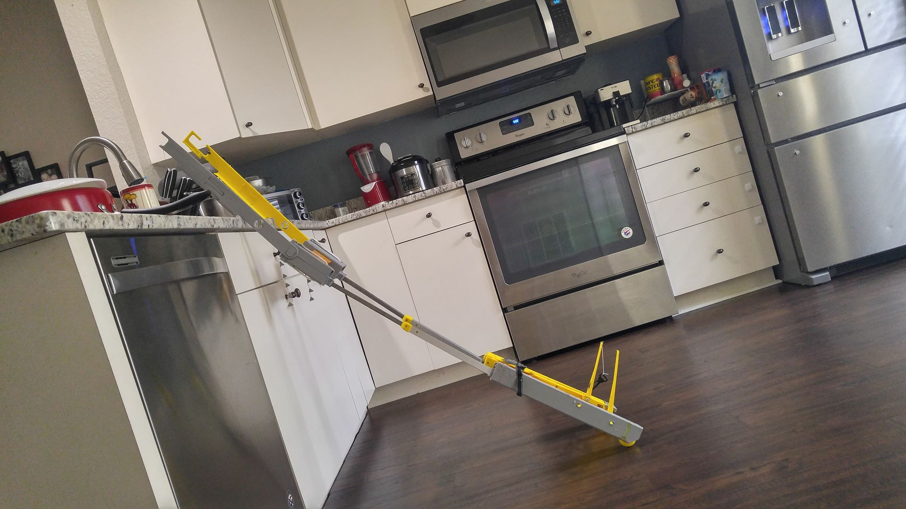
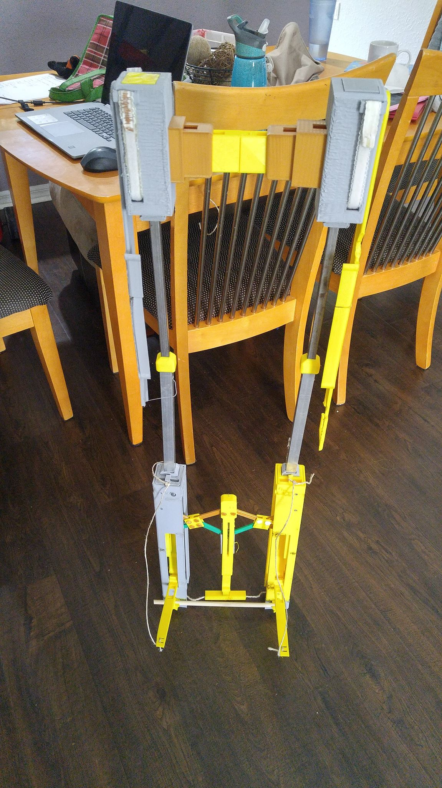
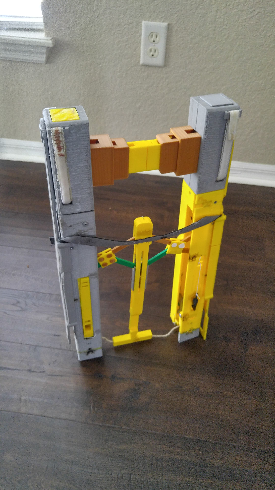

GOMI Project
Fully Extended Mode
Fully Extended Mode serves as the basis for each of the other modes. Open Mode consists of the GOMI’s arms spreading open. This mode allows it to latch onto the garbage can and hold an additional bag open. This can come in handy when your roommate refuses to get off of the couch to help you double bag the trash.

Expanded Mode
Expanded mode is GOMI converting to a lightweight dolly. It can be used to wheel the garbage outside of home, or bring in heavier items such as cases of water or cat litter. It can come in handy when adamant about bringing all of the groceries in on one trip.

Storage Mode
Storage mode serves multiple purposes. It can slide into the trash cash and allows the user to break the vacuum seal created as the trash bag fills up. It allows a compact mode that can conveniently store the GOMI away when not in use.
